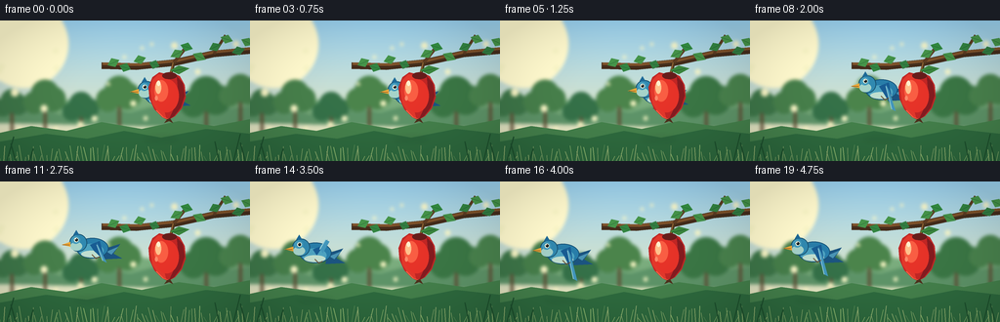
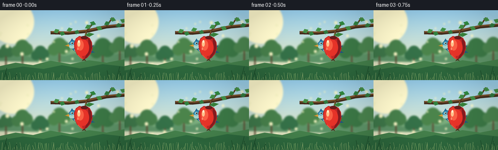
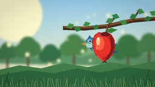
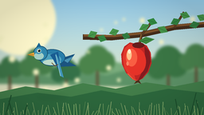

CODING AGENTS AS PIXEL WORLD MODELS
traex/GPT-5.6-Sol · dynamic_spatial_relationship_0037
点击播放 · 原生 RGB 像素
逐轮保存的候选
回放视频、检查图与代码变化。
每份候选均可单独播放。实际图片检查记录在下方工具轨迹中。
候选 01播放与检查图
点击播放 · 原生 RGB 像素


展开代码变化
--- 上一保存版本
+++ 本次保存版本
@@ -0,0 +1,226 @@
+from pathlib import Path
+import math
+import numpy as np
+from PIL import Image, ImageDraw, ImageFilter
+import artifact_io
+
+W, H, N = 256, 144, 20
+SS = 4
+SW, SH = W * SS, H * SS
+CASE_DIR = Path(__file__).resolve().parent
+rng = np.random.default_rng(3701)
+
+def sc(v):
+ return int(round(v * SS))
+
+def box(x0, y0, x1, y1):
+ return tuple(sc(v) for v in (x0, y0, x1, y1))
+
+def pts(seq):
+ return [(sc(x), sc(y)) for x, y in seq]
+
+def ellipse(draw, b, fill, outline=None, width=1):
+ draw.ellipse(box(*b), fill=fill, outline=outline, width=max(1, sc(width)))
+
+def polygon(draw, p, fill):
+ draw.polygon(pts(p), fill=fill)
+
+def line(draw, p, fill, width):
+ draw.line(pts(p), fill=fill, width=sc(width), joint='curve')
+
+def smoothstep(v):
+ v = max(0.0, min(1.0, v))
+ return v * v * (3.0 - 2.0 * v)
+
+def make_background():
+ # Warm, softly graded orchard sky.
+ yy = np.linspace(0, 1, SH)[:, None, None]
+ top = np.array([152, 207, 237], dtype=float)[None, None, :]
+ bot = np.array([246, 232, 178], dtype=float)[None, None, :]
+ arr = top * (1 - yy) + bot * yy
+ arr = np.repeat(arr, SW, axis=1)
+ bg = Image.fromarray(np.uint8(np.clip(arr, 0, 255)), 'RGB').convert('RGBA')
+ d = ImageDraw.Draw(bg, 'RGBA')
+
+ # Sun glow at upper left.
+ for r, a in [(45, 9), (31, 13), (18, 28), (8, 70)]:
+ ellipse(d, (25-r, 24-r, 25+r, 24+r), (255, 249, 205, a))
+
+ # Distant rolling fields.
+ polygon(d, [(0,101),(0,87),(24,84),(48,89),(75,79),(104,83),(129,74),
+ (158,80),(186,73),(220,82),(256,76),(256,101)], (120,169,123,150))
+ polygon(d, [(0,105),(0,96),(34,90),(67,97),(99,87),(133,94),(171,84),
+ (211,93),(256,87),(256,111)], (92,145,102,180))
+
+ # Soft distant orchard crowns and trunks.
+ for x, y, r, col in [(12,89,16,(61,117,72,150)),(46,84,20,(70,126,74,160)),
+ (83,93,17,(52,111,71,145)),(122,81,21,(74,130,74,145)),
+ (211,85,24,(58,117,68,155)),(246,77,19,(72,128,76,160))]:
+ line(d, [(x,y+4),(x,y+30)], (92,75,50,110), 3)
+ for ox, oy, rr in [(-.55*r,0,.58*r),(.4*r,-.18*r,.66*r),(0,-.45*r,.72*r)]:
+ ellipse(d, (x+ox-rr,y+oy-rr,x+ox+rr,y+oy+rr), col)
+
+ # Defocused highlights, kept neutral so the one red apple remains unique.
+ for _ in range(24):
+ x = float(rng.uniform(0, 256)); y = float(rng.uniform(20, 112)); r = float(rng.uniform(1.4, 4.0))
+ c = (248, 245, 197, int(rng.integers(18, 52)))
+ ellipse(d, (x-r,y-r,x+r,y+r), c)
+ bg = bg.filter(ImageFilter.GaussianBlur(sc(1.8)))
+
+ # Near meadow, with a few soft blades.
+ near = Image.new('RGBA', (SW,SH), (0,0,0,0)); nd = ImageDraw.Draw(near, 'RGBA')
+ polygon(nd, [(0,115),(32,108),(68,113),(104,104),(145,111),(183,103),(219,108),(256,101),(256,144),(0,144)], (67,126,74,255))
+ polygon(nd, [(0,124),(47,116),(89,121),(127,113),(165,120),(211,111),(256,116),(256,144),(0,144)], (45,104,61,255))
+ for x in np.linspace(0,256,70):
+ bh = float(rng.uniform(4,17)); sway = float(rng.uniform(-4,4))
+ line(nd, [(x,144),(x+sway,144-bh)], (77,140+int(rng.integers(-12,13)),62,150), rng.uniform(.35,.8))
+ bg.alpha_composite(near)
+ return bg
+
+BACKGROUND = make_background()
+
+def draw_branch_and_foliage(im):
+ d = ImageDraw.Draw(im, 'RGBA')
+ # Strong diagonal branch across the upper right, safely behind the actors.
+ line(d, [(104,46),(139,47),(178,43),(218,34),(262,30)], (68,45,28,255), 7)
+ line(d, [(105,44),(142,45),(181,41),(220,32),(262,28)], (124,81,43,255), 3.0)
+ line(d, [(178,43),(193,24)], (92,59,34,255), 3.2)
+ line(d, [(219,34),(231,15)], (92,59,34,255), 3.0)
+ # Leaves as paired pointed ellipses/polygons.
+ leaves = [
+ (116,43,-24,12),(128,48,20,11),(143,40,-18,12),(158,45,19,10),
+ (181,34,-26,13),(191,27,17,12),(204,37,24,13),(220,27,-25,12),
+ (232,19,18,12),(244,31,-16,13),(253,22,25,12)
+ ]
+ for i,(x,y,ang,leng) in enumerate(leaves):
+ a=math.radians(ang); ux,uy=math.cos(a),math.sin(a); vx,vy=-uy,ux
+ L=leng; V=4.8
+ p=[(x-L*.55*ux,y-L*.55*uy),(x+V*vx,y+V*vy),(x+L*.55*ux,y+L*.55*uy),(x-V*vx,y-V*vy)]
+ color=(50,123+8*(i%3),65,255) if i%2 else (69,147,73,255)
+ polygon(d,p,color)
+ line(d, [(x-L*.42*ux,y-L*.42*uy),(x+L*.42*ux,y+L*.42*uy)], (31,92,48,170), .55)
+
+def draw_bird(im, cx, cy, frame, flight):
+ d = ImageDraw.Draw(im, 'RGBA')
+ bob = math.sin(frame * .9) * (0.45 if flight < .05 else 0.9)
+ cy += bob
+ # A tiny ground shadow under the flying bird gives depth but never connects it to apple.
+ shadow = Image.new('RGBA',(SW,SH),(0,0,0,0)); sd=ImageDraw.Draw(shadow,'RGBA')
+ ellipse(sd,(cx-18,119,cx+18,124),(31,71,39,28))
+ shadow=shadow.filter(ImageFilter.GaussianBlur(sc(3)))
+ im.alpha_composite(shadow)
+ d = ImageDraw.Draw(im, 'RGBA')
+
+ # Tail first, pointed to the right (bird faces and travels left).
+ tail_y = cy + 4
+ polygon(d, [(cx+13,tail_y-3),(cx+29,tail_y-8),(cx+22,tail_y+2),(cx+31,tail_y+7),(cx+11,tail_y+8)], (27,83,126,255))
+ polygon(d, [(cx+15,tail_y),(cx+27,tail_y-5),(cx+20,tail_y+3)], (73,145,177,255))
+
+ # Body with layered azure plumage.
+ ellipse(d,(cx-16,cy-10,cx+17,cy+11),(40,123,166,255),(20,76,112,255),.8)
+ ellipse(d,(cx-13,cy-4,cx+12,cy+10),(76,160,189,245))
+ ellipse(d,(cx-11,cy+3,cx+11,cy+10),(188,218,203,180))
+
+ # Wing flaps: folded while behind, broad and animated once departing.
+ if flight < .06:
+ polygon(d, [(cx+5,cy-7),(cx+15,cy),(cx+3,cy+8),(cx-4,cy+1)], (24,91,143,255))
+ line(d, [(cx+4,cy-4),(cx+10,cy+1),(cx+3,cy+6)], (102,176,198,170), .7)
+ else:
+ flap = math.sin(frame * math.pi * .72)
+ tip_y = cy - 9 - 16*flap
+ # Lower/downstroke extends below; upstroke extends above.
+ if flap < 0:
+ tip_y = cy + 9 - 17*flap
+ polygon(d, [(cx-2,cy-3),(cx+8,cy-7),(cx+13,tip_y),(cx+2,cy+3)], (24,91,145,255))
+ polygon(d, [(cx+5,cy-5),(cx+11,tip_y),(cx+15,tip_y+2),(cx+8,cy+1)], (65,148,184,240))
+ line(d, [(cx+5,cy-3),(cx+11,tip_y)], (156,208,215,170), .65)
+
+ # Head, cheek, face and beak make the partly hidden initial subject recognizable.
+ hx, hy = cx-14, cy-5
+ ellipse(d,(hx-9,hy-9,hx+9,hy+9),(48,135,173,255),(20,74,103,255),.7)
+ ellipse(d,(hx-8,hy-1,hx+4,hy+8),(163,207,198,240))
+ ellipse(d,(hx-7,hy-7,hx+2,hy+1),(70,154,186,220))
+ # subtle crest
+ polygon(d,[(hx-5,hy-8),(hx-2,hy-13),(hx+1,hy-8)],(29,103,149,255))
+ # beak faces left
+ polygon(d,[(hx-8,hy-1),(hx-17,hy+2),(hx-8,hy+4)],(232,165,57,255))
+ line(d,[(hx-16,hy+2),(hx-9,hy+2)],(121,77,31,220),.45)
+ ellipse(d,(hx-4.2,hy-5.3,hx+.3,hy-.8),(245,246,222,255))
+ ellipse(d,(hx-3.2,hy-4.5,hx-.3,hy-1.6),(16,26,29,255))
+ ellipse(d,(hx-2.7,hy-4.2,hx-2.0,hy-3.5),(255,255,255,230))
+ # Feet tuck up once flying; initially gripping behind apple.
+ if flight < .08:
+ line(d,[(cx-2,cy+8),(cx-2,cy+15)],(105,76,48,255),1.0)
+ line(d,[(cx+5,cy+8),(cx+6,cy+14)],(105,76,48,255),1.0)
+ line(d,[(cx-5,cy+15),(cx+1,cy+15)],(105,76,48,255),.7)
+ line(d,[(cx+3,cy+14),(cx+9,cy+14)],(105,76,48,255),.7)
+ else:
+ line(d,[(cx,cy+7),(cx+4,cy+11),(cx+8,cy+9)],(105,76,48,230),.9)
+
+def draw_apple_foreground(im, frame):
+ # Stem and apple are always painted AFTER the bird: explicit, stable occlusion.
+ d=ImageDraw.Draw(im,'RGBA')
+ # stem hangs from branch
+ line(d,[(178,43),(174,57)],(76,54,29,255),3.0)
+ line(d,[(177,43),(174,56)],(158,108,54,230),1.0)
+ # one attached leaf
+ polygon(d,[(174,51),(183,46),(194,49),(183,55)],(58,132,61,255))
+ line(d,[(176,52),(190,49)],(31,93,46,210),.7)
+
+ # Main apple silhouette: lobed top, round body, slightly tapered bottom.
+ apple_pts=[(171,55),(163,53),(156,58),(152,68),(153,80),(158,91),
+ (166,99),(172,102),(179,98),(186,90),(190,79),(189,66),
+ (184,57),(178,54)]
+ polygon(d, apple_pts, (190,38,36,255))
+ # left warm red and dark edge shading
+ polygon(d,[(171,56),(162,55),(156,61),(154,72),(156,85),(163,96),(170,100),(167,88),(164,75),(166,63)],(222,55,43,245))
+ polygon(d,[(181,57),(187,64),(189,77),(185,89),(178,98),(173,101),(180,86),(182,70)],(130,27,31,170))
+ # blended-looking concentric blush
+ ellipse(d,(158,60,183,94),(226,50,40,82))
+ ellipse(d,(158,61,172,83),(245,93,66,120))
+ # top dimple and crisp specular highlights
+ ellipse(d,(166,53,181,60),(101,28,27,120))
+ ellipse(d,(159,62,165,75),(255,191,139,185))
+ ellipse(d,(160.5,61.5,164,67),(255,237,202,220))
+ ellipse(d,(158.5,77,161.5,82),(247,134,103,110))
+ # Fine lower rim catches warm light.
+ line(d,[(160,92),(167,99),(173,101)],(248,100,68,110),.8)
+ # tiny calyx
+ polygon(d,[(171,101),(168,105),(173,103),(177,105),(174,100)],(77,47,27,220))
+
+def draw_foreground_details(im):
+ d=ImageDraw.Draw(im,'RGBA')
+ # A few sharp grass blades frame, but do not obstruct subjects.
+ for x,h,lean in [(7,25,7),(16,18,-5),(30,13,4),(224,20,-4),(239,28,7),(251,19,-5)]:
+ line(d,[(x,144),(x+lean,144-h)],(29,80,45,210),1.2)
+
+frames=[]
+for f in range(N):
+ im=BACKGROUND.copy()
+ draw_branch_and_foliage(im)
+
+ # Frames 0-4 establish "behind"; frames 5-15 show a clean leftward flight;
+ # frames 16-19 hold the final left-of relation with a gentle hover.
+ raw=(f-4)/11.0
+ move=smoothstep(raw)
+ cx=164 + (64-164)*move
+ cy=76 - 7*math.sin(math.pi*move) - 3*move
+ if f >= 16:
+ cx += math.sin((f-16)*.8)*1.0
+ cy += math.sin((f-16)*1.2)*1.2
+ draw_bird(im,cx,cy,f,move)
+ draw_apple_foreground(im,f)
+ draw_foreground_details(im)
+
+ # Cinematic subtle vignette.
+ a=np.asarray(im.convert('RGB')).astype(np.float32)
+ yh,xw=np.mgrid[0:SH,0:SW]
+ dx=(xw-SW/2)/(SW/2); dy=(yh-SH/2)/(SH/2)
+ vig=np.clip(1.035-0.10*(dx*dx+dy*dy),.88,1.02)[...,None]
+ a=np.clip(a*vig,0,255).astype(np.uint8)
+ out=Image.fromarray(a,'RGB').resize((W,H),Image.Resampling.LANCZOS)
+ frames.append(np.asarray(out,dtype=np.uint8))
+
+frames=np.stack(frames,axis=0)
+artifact_io.save(frames, CASE_DIR)
+print(f'saved {frames.shape} {frames.dtype} to {CASE_DIR}')
可观测工具轨迹
实际执行的命令与返回图片。
命令 1exit 0
/bin/bash -lc "cat prompt.txt && printf '\\n--- GENERATION_RULES.md ---\\n' && cat GENERATION_RULES.md"
命令 2exit 0
/bin/bash -lc "cat task_spec.json && printf '\\n--- files ---\\n' && find . -maxdepth 2 -type f -printf '%p\\n' | sort"
命令 3exit 0
/bin/bash -lc "sed -n '1,240p' artifact_io.py"
命令 4exit 0
/bin/bash -lc "cat > generate.py <<'PY'
from pathlib import Path
import math
import numpy as np
from PIL import Image, ImageDraw, ImageFilter
import artifact_io
W, H, N = 256, 144, 20
SS = 4
SW, SH = W * SS, H * SS
CASE_DIR = Path(__file__).resolve().parent
rng = np.random.default_rng(3701)
def sc(v):
return int(round(v * SS))
def box(x0, y0, x1, y1):
return tuple(sc(v) for v in (x0, y0, x1, y1))
def pts(seq):
return [(sc(x), sc(y)) for x, y in seq]
def ellipse(draw, b, fill, outline=None, width=1):
draw.ellipse(box(*b), fill=fill, outline=outline, width=max(1, sc(width)))
def polygon(draw, p, fill):
draw.polygon(pts(p), fill=fill)
def line(draw, p, fill, width):
draw.line(pts(p), fill=fill, width=sc(width), joint='curve')
def smoothstep(v):
v = max(0.0, min(1.0, v))
return v * v * (3.0 - 2.0 * v)
def make_background():
# Warm, softly graded orchard sky.
yy = np.linspace(0, 1, SH)[:, None, None]
top = np.array([152, 207, 237], dtype=float)[None, None, :]
bot = np.array([246, 232, 178], dtype=float)[None, None, :]
arr = top * (1 - yy) + bot * yy
arr = np.repeat(arr, SW, axis=1)
bg = Image.fromarray(np.uint8(np.clip(arr, 0, 255)), 'RGB').convert('RGBA')
d = ImageDraw.Draw(bg, 'RGBA')
# Sun glow at upper left.
for r, a in [(45, 9), (31, 13), (18, 28), (8, 70)]:
ellipse(d, (25-r, 24-r, 25+r, 24+r), (255, 249, 205, a))
# Distant rolling fields.
polygon(d, [(0,101),(0,87),(24,84),(48,89),(75,79),(104,83),(129,74),
(158,80),(186,73),(220,82),(256,76),(256,101)], (120,169,123,150))
polygon(d, [(0,105),(0,96),(34,90),(67,97),(99,87),(133,94),(171,84),
(211,93),(256,87),(256,111)], (92,145,102,180))
# Soft distant orchard crowns and trunks.
for x, y, r, col in [(12,89,16,(61,117,72,150)),(46,84,20,(70,126,74,160)),
(83,93,17,(52,111,71,145)),(122,81,21,(74,130,74,145)),
(211,85,24,(58,117,68,155)),(246,77,19,(72,128,76,160))]:
line(d, [(x,y+4),(x,y+30)], (92,75,50,110), 3)
for ox, oy, rr in [(-.55*r,0,.58*r),(.4*r,-.18*r,.66*r),(0,-.45*r,.72*r)]:
ellipse(d, (x+ox-rr,y+oy-rr,x+ox+rr,y+oy+rr), col)
# Defocused highlights, kept neutral so the one red apple remains unique.
for _ in range(24):
x = float(rng.uniform(0, 256)); y = float(rng.uniform(20, 112)); r = float(rng.uniform(1.4, 4.0))
c = (248, 245, 197, int(rng.integers(18, 52)))
ellipse(d, (x-r,y-r,x+r,y+r), c)
bg = bg.filter(ImageFilter.GaussianBlur(sc(1.8)))
# Near meadow, with a few soft blades.
near = Image.new('RGBA', (SW,SH), (0,0,0,0)); nd = ImageDraw.Draw(near, 'RGBA')
polygon(nd, [(0,115),(32,108),(68,113),(104,104),(145,111),(183,103),(219,108),(256,101),(256,144),(0,144)], (67,126,74,255))
polygon(nd, [(0,124),(47,116),(89,121),(127,113),(165,120),(211,111),(256,116),(256,144),(0,144)], (45,104,61,255))
for x in np.linspace(0,256,70):
bh = float(rng.uniform(4,17)); sway = float(rng.uniform(-4,4))
line(nd, [(x,144),(x+sway,144-bh)], (77,140+int(rng.integers(-12,13)),62,150), rng.uniform(.35,.8))
bg.alpha_composite(near)
return bg
BACKGROUND = make_background()
def draw_branch_and_foliage(im):
d = ImageDraw.Draw(im, 'RGBA')
# Strong diagonal branch across the upper right, safely behind the actors.
line(d, [(104,46),(139,47),(178,43),(218,34),(262,30)], (68,45,28,255), 7)
line(d, [(105,44),(142,45),(181,41),(220,32),(262,28)], (124,81,43,255), 3.0)
line(d, [(178,43),(193,24)], (92,59,34,255), 3.2)
line(d, [(219,34),(231,15)], (92,59,34,255), 3.0)
# Leaves as paired pointed ellipses/polygons.
leaves = [
(116,43,-24,12),(128,48,20,11),(143,40,-18,12),(158,45,19,10),
(181,34,-26,13),(191,27,17,12),(204,37,24,13),(220,27,-25,12),
(232,19,18,12),(244,31,-16,13),(253,22,25,12)
]
for i,(x,y,ang,leng) in enumerate(leaves):
a=math.radians(ang); ux,uy=math.cos(a),math.sin(a); vx,vy=-uy,ux
L=leng; V=4.8
p=[(x-L*.55*ux,y-L*.55*uy),(x+V*vx,y+V*vy),(x+L*.55*ux,y+L*.55*uy),(x-V*vx,y-V*vy)]
color=(50,123+8*(i%3),65,255) if i%2 else (69,147,73,255)
polygon(d,p,color)
line(d, [(x-L*.42*ux,y-L*.42*uy),(x+L*.42*ux,y+L*.42*uy)], (31,92,48,170), .55)
def draw_bird(im, cx, cy, frame, flight):
d = ImageDraw.Draw(im, 'RGBA')
bob = math.sin(frame * .9) * (0.45 if flight < .05 else 0.9)
cy += bob
# A tiny ground shadow under the flying bird gives depth but never connects it to apple.
shadow = Image.new('RGBA',(SW,SH),(0,0,0,0)); sd=ImageDraw.Draw(shadow,'RGBA')
ellipse(sd,(cx-18,119,cx+18,124),(31,71,39,28))
shadow=shadow.filter(ImageFilter.GaussianBlur(sc(3)))
im.alpha_composite(shadow)
d = ImageDraw.Draw(im, 'RGBA')
# Tail first, pointed to the right (bird faces and travels left).
tail_y = cy + 4
polygon(d, [(cx+13,tail_y-3),(cx+29,tail_y-8),(cx+22,tail_y+2),(cx+31,tail_y+7),(cx+11,tail_y+8)], (27,83,126,255))
polygon(d, [(cx+15,tail_y),(cx+27,tail_y-5),(cx+20,tail_y+3)], (73,145,177,255))
# Body with layered azure plumage.
ellipse(d,(cx-16,cy-10,cx+17,cy+11),(40,123,166,255),(20,76,112,255),.8)
ellipse(d,(cx-13,cy-4,cx+12,cy+10),(76,160,189,245))
ellipse(d,(cx-11,cy+3,cx+11,cy+10),(188,218,203,180))
# Wing flaps: folded while behind, broad and animated once departing.
if flight < .06:
polygon(d, [(cx+5,cy-7),(cx+15,cy),(cx+3,cy+8),(cx-4,cy+1)], (24,91,143,255))
line(d, [(cx+4,cy-4),(cx+10,cy+1),(cx+3,cy+6)], (102,176,198,170), .7)
else:
flap = math.sin(frame * math.pi * .72)
tip_y = cy - 9 - 16*flap
# Lower/downstroke extends below; upstroke extends above.
if flap < 0:
tip_y = cy + 9 - 17*flap
polygon(d, [(cx-2,cy-3),(cx+8,cy-7),(cx+13,tip_y),(cx+2,cy+3)], (24,91,145,255))
polygon(d, [(cx+5,cy-5),(cx+11,tip_y),(cx+15,tip_y+2),(cx+8,cy+1)], (65,148,184,240))
line(d, [(cx+5,cy-3),(cx+11,tip_y)], (156,208,215,170), .65)
# Head, cheek, face and beak make the partly hidden initial subject recognizable.
hx, hy = cx-14, cy-5
ellipse(d,(hx-9,hy-9,hx+9,hy+9),(48,135,173,255),(20,74,103,255),.7)
ellipse(d,(hx-8,hy-1,hx+4,hy+8),(163,207,198,240))
ellipse(d,(hx-7,hy-7,hx+2,hy+1),(70,154,186,220))
# subtle crest
polygon(d,[(hx-5,hy-8),(hx-2,hy-13),(hx+1,hy-8)],(29,103,149,255))
# beak faces left
polygon(d,[(hx-8,hy-1),(hx-17,hy+2),(hx-8,hy+4)],(232,165,57,255))
line(d,[(hx-16,hy+2),(hx-9,hy+2)],(121,77,31,220),.45)
ellipse(d,(hx-4.2,hy-5.3,hx+.3,hy-.8),(245,246,222,255))
ellipse(d,(hx-3.2,hy-4.5,hx-.3,hy-1.6),(16,26,29,255))
ellipse(d,(hx-2.7,hy-4.2,hx-2.0,hy-3.5),(255,255,255,230))
# Feet tuck up once flying; initially gripping behind apple.
if flight < .08:
line(d,[(cx-2,cy+8),(cx-2,cy+15)],(105,76,48,255),1.0)
line(d,[(cx+5,cy+8),(cx+6,cy+14)],(105,76,48,255),1.0)
line(d,[(cx-5,cy+15),(cx+1,cy+15)],(105,76,48,255),.7)
line(d,[(cx+3,cy+14),(cx+9,cy+14)],(105,76,48,255),.7)
else:
line(d,[(cx,cy+7),(cx+4,cy+11),(cx+8,cy+9)],(105,76,48,230),.9)
def draw_apple_foreground(im, frame):
# Stem and apple are always painted AFTER the bird: explicit, stable occlusion.
d=ImageDraw.Draw(im,'RGBA')
# stem hangs from branch
line(d,[(178,43),(174,57)],(76,54,29,255),3.0)
line(d,[(177,43),(174,56)],(158,108,54,230),1.0)
# one attached leaf
polygon(d,[(174,51),(183,46),(194,49),(183,55)],(58,132,61,255))
line(d,[(176,52),(190,49)],(31,93,46,210),.7)
# Main apple silhouette: lobed top, round body, slightly tapered bottom.
apple_pts=[(171,55),(163,53),(156,58),(152,68),(153,80),(158,91),
(166,99),(172,102),(179,98),(186,90),(190,79),(189,66),
(184,57),(178,54)]
polygon(d, apple_pts, (190,38,36,255))
# left warm red and dark edge shading
polygon(d,[(171,56),(162,55),(156,61),(154,72),(156,85),(163,96),(170,100),(167,88),(164,75),(166,63)],(222,55,43,245))
polygon(d,[(181,57),(187,64),(189,77),(185,89),(178,98),(173,101),(180,86),(182,70)],(130,27,31,170))
# blended-looking concentric blush
ellipse(d,(158,60,183,94),(226,50,40,82))
ellipse(d,(158,61,172,83),(245,93,66,120))
# top dimple and crisp specular highlights
ellipse(d,(166,53,181,60),(101,28,27,120))
ellipse(d,(159,62,165,75),(255,191,139,185))
ellipse(d,(160.5,61.5,164,67),(255,237,202,220))
ellipse(d,(158.5,77,161.5,82),(247,134,103,110))
# Fine lower rim catches warm light.
line(d,[(160,92),(167,99),(173,101)],(248,100,68,110),.8)
# tiny calyx
polygon(d,[(171,101),(168,105),(173,103),(177,105),(174,100)],(77,47,27,220))
def draw_foreground_details(im):
d=ImageDraw.Draw(im,'RGBA')
# A few sharp grass blades frame, but do not obstruct subjects.
for x,h,lean in [(7,25,7),(16,18,-5),(30,13,4),(224,20,-4),(239,28,7),(251,19,-5)]:
line(d,[(x,144),(x+lean,144-h)],(29,80,45,210),1.2)
frames=[]
for f in range(N):
im=BACKGROUND.copy()
draw_branch_and_foliage(im)
# Frames 0-4 establish \"behind\"; frames 5-15 show a clean leftward flight;
# frames 16-19 hold the final left-of relation with a gentle hover.
raw=(f-4)/11.0
move=smoothstep(raw)
cx=164 + (64-164)*move
cy=76 - 7*math.sin(math.pi*move) - 3*move
if f >= 16:
cx += math.sin((f-16)*.8)*1.0
cy += math.sin((f-16)*1.2)*1.2
draw_bird(im,cx,cy,f,move)
draw_apple_foreground(im,f)
draw_foreground_details(im)
# Cinematic subtle vignette.
a=np.asarray(im.convert('RGB')).astype(np.float32)
yh,xw=np.mgrid[0:SH,0:SW]
dx=(xw-SW/2)/(SW/2); dy=(yh-SH/2)/(SH/2)
vig=np.clip(1.035-0.10*(dx*dx+dy*dy),.88,1.02)[...,None]
a=np.clip(a*vig,0,255).astype(np.uint8)
out=Image.fromarray(a,'RGB').resize((W,H),Image.Resampling.LANCZOS)
frames.append(np.asarray(out,dtype=np.uint8))
frames=np.stack(frames,axis=0)
artifact_io.save(frames, CASE_DIR)
print(f'saved {frames.shape} {frames.dtype} to {CASE_DIR}')
PY
python generate.py
ls -lh pixels.npz inspection.png index.html frames/00.png frames/19.png"命令 5exit 0
/bin/bash -lc "python - <<'PY'
import numpy as np
from PIL import Image
p=np.load('pixels.npz')['pixels']
assert p.shape==(144,256,20) and p.dtype==np.uint32
for i in (0,4,8,12,16,19):
a=np.asarray(Image.open(f'frames/{i:02d}.png'))
assert a.shape==(144,256,3) and a.dtype==np.uint8
assert np.array_equal(((a[...,0].astype(np.uint32)<<16)|(a[...,1].astype(np.uint32)<<8)|a[...,2]),p[...,i])
print('validated pixels.npz and key RGB frames:',p.shape,p.dtype)
print('adjacent changed pixels:',[int(np.count_nonzero(p[...,i]"'!=p[...,i-1])) for i in range(1,20)])
PY'视觉工具实际返回图片 1

视觉工具实际返回图片 2

视觉工具实际返回图片 3

保存候选 1 份；完成命令 5 次；可验证图片返回 3 张。原始 API 响应与完整日志保留在本地。